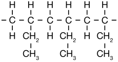
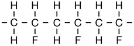
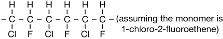
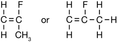
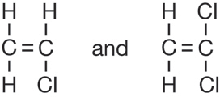
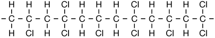
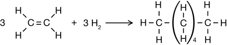
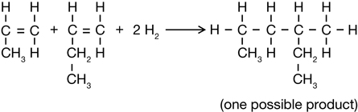
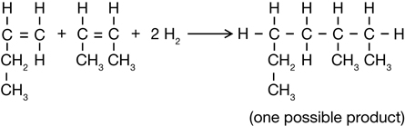

Module 6—Petrochemicals
 Self-Check Answers
Self-Check Answers
Contact your teacher if your answers vary significantly from the answers provided here.
SC 4.
Practice 1.
- 
- 
- 
- The polymer in part c should be similar to Teflon but less extreme—insoluble in organic solvents, rigid, and highly resistant to heating.
Practice 2.

Practice 3.
- but-2-ene
- 1-chloro-1,2-difluoropropene
If you are having difficulty determining the monomer from a given addition polymer structure, write the formula for ethene; then replace the H atoms with the groups that are dangling off the polymer chain.
Practice 4.
The monomer should be an alkene or alkyne.
Practice 5.
monomers: 
polymer: 
Practice 6.
- Typical properties of a plastic are insolubility in water, good insulators of heat and electricity, flexibility, and high melting point for a molecular material.
- Within a polymer molecule there are very strong covalent intramolecular bonds. Between the polymer molecules there are always intermolecular London forces. Depending on the structure of the polymer, there may also be dipole-dipole forces and hydrogen bonding.
- Plastics are flexible because the intermolecular bonds holding the polymer chains together are easily deformed. Plastics are good insulators because they are molecular, so they don’t have freely moving ions or electrons. The intermolecular forces for such large molecules help explain the insolubility and high melting point of plastics.
Practice 7.
- 
- 
- 
Practice 8.
Answers will vary. Common reasons for not recycling some plastics are that there is no market for the recycled material, recycling degrades the material too much, and it is too difficult to sort the plastics.